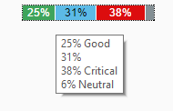

Stacked Bar Micro Chart
The control shows a progress chart that displays the overall progress and a summary of the items.
Various bars can have different value colors, for example for different statuses such as accepted, rejected, and open items. There is no limit to the number of bars that the StackedBarMicroChart control can contain.
The sap.suite.ui.microchart.StackedBarMicroChart control is designed to display key figures or numbers inside a set of bars defined by different lengths and colors. It can be displayed standalone or in a table.


Details
Bar values
The progress status of each item can be defined as an absolute value or as a percentage (value property). Each stacked bar is part of the chart that is defined as 100% (if you are working with percentages) or as an absolute value (if you are working with a maximum value). If you do not set a maximum value (maxValue property), the sum of all bar values is considered as the maximum value and the displayed value is set as a percentage for each item.
The number of decimal places for percentage values is, by default, 1. This can be changed by the application using the precision property. If the percentage values are used as labels, the precision property affects the length of the labels. Take this into account when the length of the bar is limited or there is not enough space to display the whole label.
Bar colors
By default, the given value is displayed as a label inside the bar, but you can overwrite it in your application using the displayValue property. You can also overwrite the default color of the bar (valueColor property) using predefined less parameters for colors, predefined semantic parameters (for example, Error, Critical, Good, Neutral) or even hex values, such as #fafafa. If there is no color, the micro chart automatically chooses one of the chart colors (sapUiChart1-11).
Text and background colors
The text color adapts automatically depending on the corresponding bar background color. If there is a dark background, a light text color is used and if there is a light background, a dark text color is used.
Chart size
You can define the chart with the size property. If you use a fixed size, you can select predefined sizes (XS, S, M, L). If you use a responsive design, you can use the responsive property value. The chart size is then adjusted based on the surrounding container size, for example in a sap.m.FlexBox control. The maximum height of the chart is 1 rem. If there is not enough space to show the labels, they are not displayed. If there is not enough space to show the micro chart, it is not displayed either.
Integration and use
The sap.suite.ui.microchart.StackedBarMicroChart control is a chart control and aggregates the bars of type sap.suite.ui.microchart.StackedBarMicroChartBar. One chart can contain one or more bars. You can call it up by clicking the mouse button or by using the Space or Enter key.
Tooltip support
The chart can have a tooltip with predefined displayValue property values or calculated percent values and it can be set on bar level and on chart level. Each value of the chart is displayed in the tooltip in a separate line. When the bar has a semantic color, the text (for example Good, Critical) will be added behind the displayed value. In some cases the text in the tooltip has another name than the semantic color. The tooltip can be suppressed by setting its value to an empty string.
